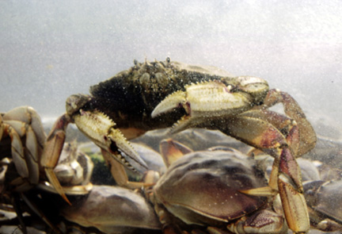

Got Butter?? This poor crab is fated to be someone's dinner. For now he gets to live and be famous in the crab and lobster tank. The photograph was originally produced with late afternoon sun and a 35 mm camera using Provia slide film, shutter speed 125, F19. Photo copyright Andrea L. Arredondo, May 11, 2000.
Updated by Andrea Arredondo
5/19/00